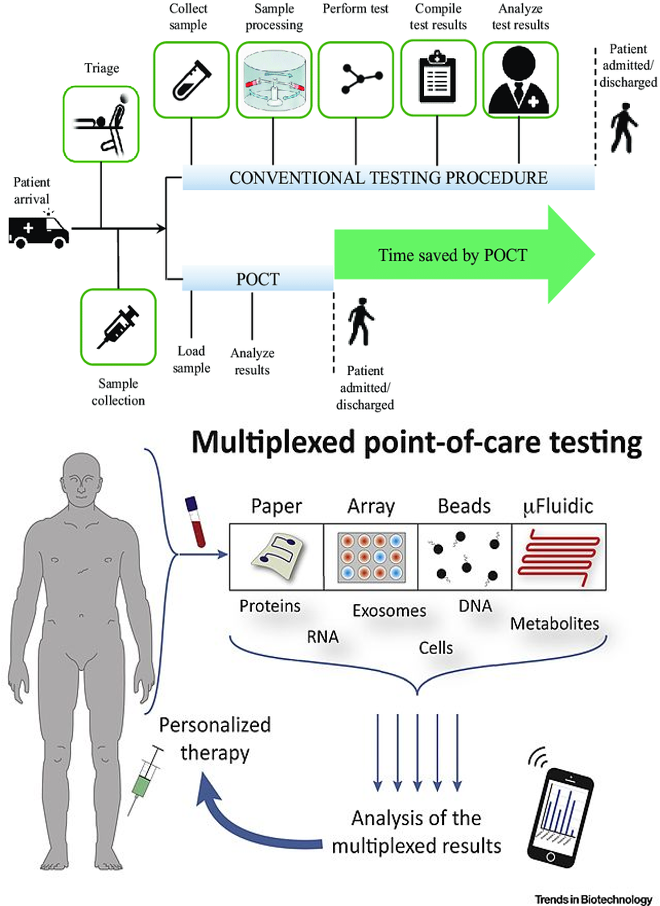

Point of Care
- De acordo com Schiling (2014), no Canadá, o uso de testes POC durante a estabilização dos pacientes antes da transferência inter-hospitalar foi calculada, resultando em uma economia substancial de tempo.
- Ainda, nos EUA, a implementação de POC resultou em uma diminuição de 20% nas internações na unidade de dor torácica e consequentemente uma economia substancial.
- Em cirurgia cardiotorácica com alta utilização de componentes sanguíneos caros, a introdução da medição da coagulação por teste POC resultou em economia de 56%.
- Na unidade de observação cardíaca, a introdução de troponina reduziu o tempo de permanência, taxas de admissão diminuídas e resultou em menos procedimentos dispendiosos, com uma economia de 25% nos custos por paciente (Simões e Silva, 2022).
- Bollinger e Tanaka (2017) consideram que o teste de coagulação POC permite decisões clínicas rápidas em intervenções hematológicas e, quando usado em conjunto com um algoritmo de transfusão adequado, pode reduzir o uso de hemoderivados e complicações potencialmente associadas à transfusão de sangue.
- De acordo com Schiling (2014), na UTI neonatal, o teste POC demonstrou reduzir os custos por paciente em 8,3% como resultado da redução de testes laboratoriais principais e menos transfusões.
- No pronto-socorro pediátrico, a introdução do teste POC para detecção de vírus sincicial respiratório humano na triagem de pacientes foi significativamente alterada, trazendo mais rapidez às decisões terapêuticas bem como aos procedimentos de isolamento para tais, na medida em que era possível liberar leitos durante os períodos de epidemia, com grandes consequências econômicas
